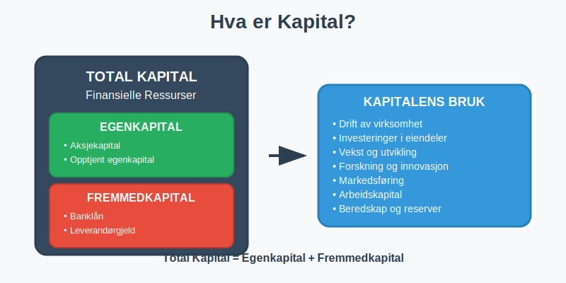
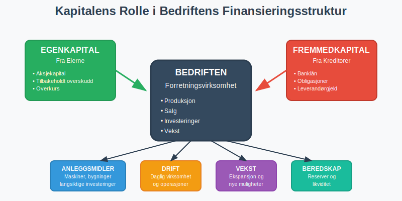
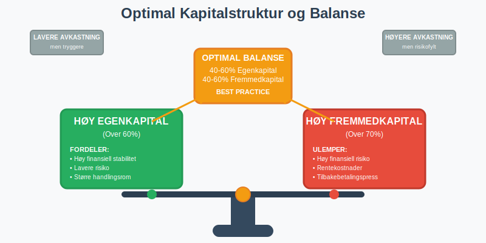
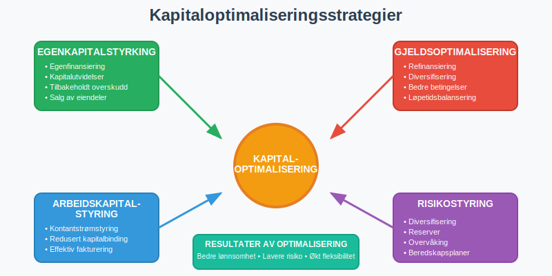

Kapital er de finansielle ressursene som er tilgjengelige for en bedrift eller organisasjon til å drive virksomhet, foreta investeringer og skape verdier. Som et grunnleggende begrep i regnskap og økonomi, omfatter kapital alle former for finansiering som gjør det mulig for bedrifter å anskaffe eiendeler og drive forretningsvirksomhet.

Definisjon og Grunnleggende Forståelse
Kapital kan defineres på flere måter avhengig av kontekst:
Regnskapsmessig Definisjon
I regnskapssammenheng representerer kapital:
- Total finansiering tilgjengelig for bedriften
- Summen av egenkapital og fremmedkapital
- Finansieringsgrunnlaget for alle bedriftens aktiviteter
Økonomisk Perspektiv
Fra et økonomisk synspunkt er kapital:
- Produksjonsfaktor sammen med arbeid og naturressurser
- Investerbare midler som kan generere fremtidig avkastning
- Grunnlag for verdiskaping og økonomisk vekst

Hovedtyper av Kapital
Kapital kan klassifiseres på flere måter. Den mest grunnleggende inndelingen skiller mellom egenkapital og fremmedkapital:
1. Egenkapital
Egenkapital er kapital som tilhører bedriftens eiere:
Komponenter av Egenkapital:
- Aksjekapital - direkte investering fra eierne
- Opptjent egenkapital - akkumulert overskudd fra driften
- Overkurs - beløp betalt utover pålydende ved aksjeemisjoner
- Andre egenkapitalposter - fond og reserver
2. Fremmedkapital
Fremmedkapital er kapital lånt fra eksterne kilder:
Typer Fremmedkapital:
- Banklån - tradisjonell lånefinansiering
- Obligasjoner - verdipapirbasert gjeld
- Leverandørgjeld - kreditt fra leverandører
- Annen kortsiktig gjeld - diverse forpliktelser
Kapitalstruktur og Finansieringsmiks
En bedrifts kapitalstruktur refererer til forholdet mellom egenkapital og fremmedkapital:
Optimal Kapitalstruktur
| Kapitaltype | Fordeler | Ulemper |
|---|---|---|
| Høy Egenkapital | • Finansiell stabilitet • Lavere risiko • Større handlingsrom |
• Lavere avkastning på egenkapital • Dyrere finansiering • Mindre gearing-effekt |
| Høy Fremmedkapital | • Skattefordeler (rentefradrag) • Høyere avkastning på egenkapital • Gearing-effekt |
• Høyere finansiell risiko • Rentekostnader • Tilbakebetalingsforpliktelser |

Kapital i Ulike Selskapsformer
Aksjeselskap (AS)
- Minimum aksjekapital: 30 000 kr
- Kapital delt i aksjer med begrenset ansvar
- Fleksibel kapitalstruktur med mulighet for ulike finansieringsformer
Enkeltpersonforetak
- Eierens personlige kapital utgjør egenkapitalen
- Ubegrenset personlig ansvar for all gjeld
- Enklere kapitalstruktur enn aksjeselskap
Ansvarlig Selskap (ANS)
- Kapital fra flere deltakere med solidarisk ansvar
- Delt eierskap og ansvar for kapitalen
Kapitalberegning og Analyse
Grunnleggende Kapitalformel
Total Kapital = Egenkapital + Fremmedkapital
Praktisk Eksempel: Kapitalanalyse
| Balanseposter | Beløp (NOK) | Andel av Total Kapital |
|---|---|---|
| EGENKAPITAL | ||
| Aksjekapital | 200 000 | 13,3% |
| Opptjent egenkapital | 500 000 | 33,3% |
| Sum egenkapital | 700 000 | 46,7% |
| FREMMEDKAPITAL | ||
| Langsiktig gjeld | 600 000 | 40,0% |
| Kortsiktig gjeld | 200 000 | 13,3% |
| Sum fremmedkapital | 800 000 | 53,3% |
| TOTAL KAPITAL | 1 500 000 | 100,0% |
Kapitalstruktur-analyse:
- Egenkapitalandel: 46,7% (god soliditet)
- Gjeldsgrad: 1,14 (moderat gjeldsbelastning)
- Balansert finansieringsmiks mellom egen- og fremmedkapital
Viktige Kapitalnøkkeltall
1. Egenkapitalandel
Egenkapitalandel = (Egenkapital / Total Kapital) × 100%
Vurderingskriterier:
| Egenkapitalandel | Vurdering | Betydning |
|---|---|---|
| Over 40% | Meget god | Høy finansiell stabilitet |
| 30-40% | God | Akseptabel soliditet |
| 20-30% | Middels | Noe risiko, bør overvåkes |
| 10-20% | Svak | Høy gjeldsgrad, finansiell risiko |
| Under 10% | Kritisk | Meget høy risiko |
2. Gjeldsgrad
Gjeldsgrad = Fremmedkapital / Egenkapital
3. Kapitalens Avkastning
Avkastning på Total Kapital = (Resultat før finanskostnader / Gjennomsnittlig total kapital) × 100%
Kapitalforvaltning og Optimalisering
Strategier for Kapitaloptimalisering
1. Egenkapitalstyrking
- Egenfinansiering gjennom tilbakeholdt overskudd
- Kapitalutvidelser ved emisjoner
- Salg av ikke-kjernevirksomhet
2. Fremmedkapitaloptimalisering
- Refinansiering til bedre betingelser
- Diversifisering av finansieringskilder
- Balansering av løpetider
3. Arbeidskapitalstyring
- Optimalisering av arbeidskapital
- Effektiv kontantstrømstyring
- Reduksjon av kapitalbinding

Kapital og Risikostyring
Kapitalrisiko
- Likviditetsrisiko - mangel på tilgjengelig kapital
- Kredittrisiko - tap på utlånt kapital
- Markedsrisiko - verdifall på kapitalplasseringer
Risikohåndtering
- Diversifisering av kapitalkilder
- Opprettholdelse av tilstrekkelige reserver
- Regelmessig overvåking av kapitalposisjon
Kapital i Ulike Bransjer
Kapitalintensive Bransjer
- Industri og produksjon - høye investeringer i maskiner og utstyr
- Eiendom - store kapitalbehov for eiendomsinvesteringer
- Energi - omfattende infrastrukturinvesteringer
Mindre Kapitalintensive Bransjer
- Tjenesteyting - lavere kapitalbehov
- Teknologi - fokus på menneskelig kapital
- Konsulentvirksomhet - minimal fysisk kapital
Kapital og Skattehensyn
Skattemessige Aspekter
- Rentefradrag på fremmedkapital reduserer skattekostnaden
- Utbytteskatt på egenkapitalavkastning
- Kapitalgevinstbeskatning ved salg av kapitalplasseringer
Skatteoptimalisering
- Balansering mellom rente- og utbytteinntekter
- Timing av kapitalgevinster og -tap
- Utnyttelse av skattemessige fordeler
Internasjonale Kapitalmuligheter
Utenlandsk Kapital
- Internasjonale lån og kredittfasiliteter
- Utenlandske investorer i egenkapital
- Valutarisiko ved utenlandsk finansiering
Kapitalmarkeder
- Børsnotering for tilgang til kapitalmarkeder
- Obligasjonsutstedelser for større kapitalbehov
- Private equity og venturekapital
Fremtidens Kapital
Nye Kapitalformer
- Grønn finansiering og bærekraftig kapital
- Crowdfunding og alternative finansieringsformer
- Kryptovaluta og digitale eiendeler
Teknologiske Endringer
- Fintech-løsninger for kapitalforvaltning
- Automatiserte investeringsplattformer
- Blockchain-baserte finansieringsløsninger
Praktiske Råd for Kapitalforvaltning
For Små og Mellomstore Bedrifter
- Bygg opp egenkapital gradvis gjennom lønnsom drift
- Diversifiser finansieringskilder for å redusere risiko
- Overvåk kapitalstrukturen regelmessig
- Planlegg kapitalbehov på lang sikt
For Gründere
- Start med tilstrekkelig startkapital
- Vurder ulike finansieringsalternativer
- Behold kontroll over kapitalstrukturen
- Søk profesjonell rådgivning ved større kapitalendringer
Kapital og Bærekraft
ESG-hensyn (Environmental, Social, Governance)
- Grønn kapital for miljøvennlige investeringer
- Sosial kapital og samfunnsansvar
- God selskapsstyring tiltrekker kapital
Bærekraftig Kapitalforvaltning
- Langsiktig verdiskaping fremfor kortsiktig profitt
- Integrering av bærekraftshensyn i kapitalallokering
- Rapportering på bærekraftsmål og -resultater
Konklusjon
Kapital er grunnlaget for all forretningsvirksomhet og en kritisk suksessfaktor for bedrifter. En optimal kapitalstruktur balanserer risiko og avkastning, mens effektiv kapitalforvaltning sikrer tilgang til nødvendige finansielle ressurser for vekst og utvikling.
Forståelse av kapitalets ulike former, fra egenkapital til fremmedkapital, er essensielt for å ta informerte beslutninger om finansiering og investeringer. Ved å følge beste praksis for kapitalforvaltning kan bedrifter sikre finansiell stabilitet og skape langsiktig verdier for alle interessenter.
For dypere innsikt i spesifikke aspekter av kapital, anbefaler vi å lese våre detaljerte artikler om egenkapital, fremmedkapital, arbeidskapital, og sysselsatt kapital.